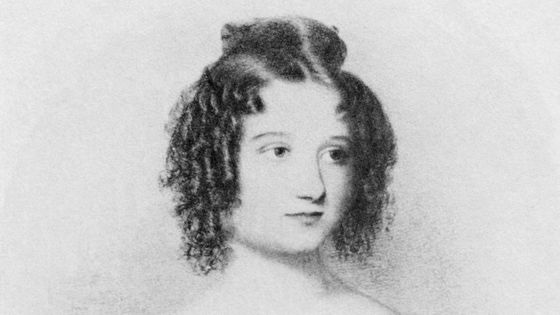
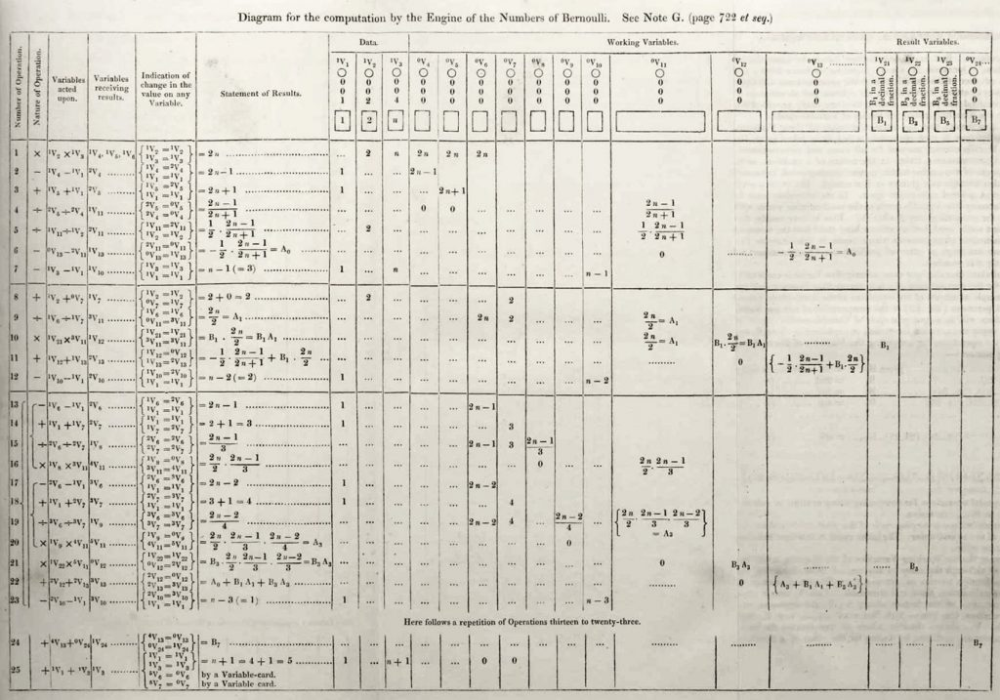

Victime de l'effet Matilda, Ada King Lovelace fut une mathématicienne britannique du XIXe siècle longtemps négligée par l'histoire des sciences malgré sa profonde contribution aux mathématiques et tout particulièrement à l'informatique, une avancée à ce jour omniprésent dans notre société et indispensable dans le monde informatique, qui aura notament été utile à Alain Turing pour créer le premier ordinateur.
Fasciné dès ses 17 ans par les machines à calcul, elle fut en effet la novatrice du premier véritable programme informatique, qu'elle écrit sur un ancêtre de l'ordinateur: la machine analytique de Charles Baddage. En traduisant l'article de l'ingénieur italien Luigi Menabrea, elle y envisageait le concept d'une machine programmable universelle, capable de réaliser une série illimitée de tâches interchangeables, et celle d'une machine généraliste qui ne se restreint pas aux nombres. Ses notes préfigurait en effet l'intelligence artificielle. Souffrant d'un cancer, elle décedera en 1852 à seulement 36 ans. En somme Ada Lovelace aura été une figure inspirante non seulement pour l'histoire de l'informatique mais également fémini